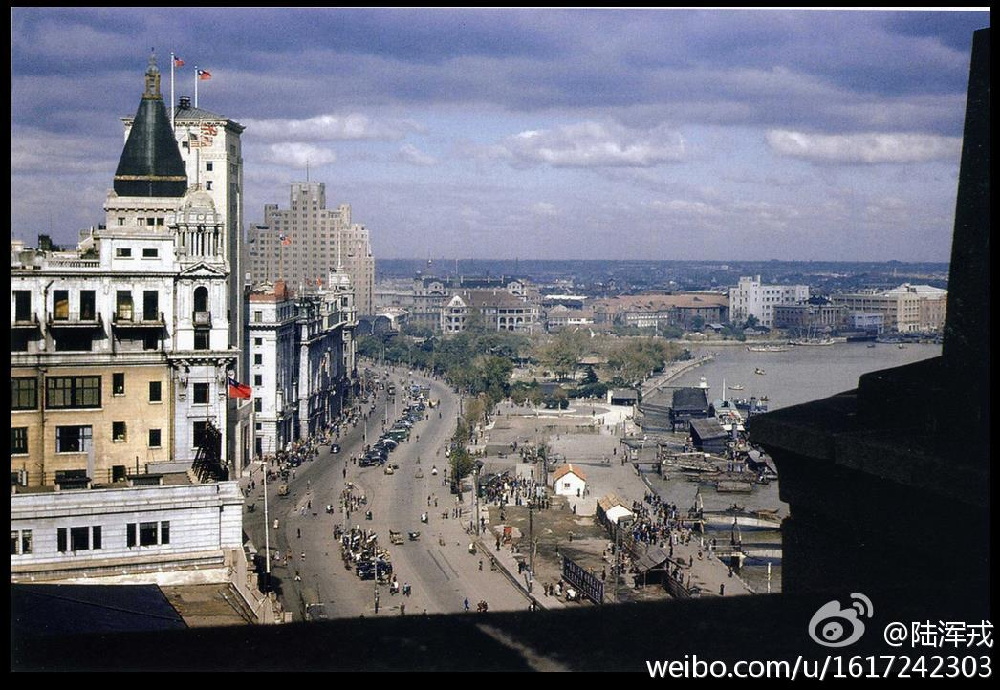
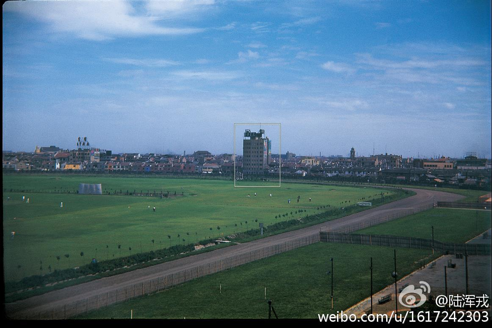

这事情很简单，有个家伙占了联邦土地放牧了几十年，联邦政府罚款数次无果，强制执行。这家伙挺横搞了一帮朋友拿着枪跟联邦政府对峙了几天。什么联邦政府管辖权，全是胡扯。国内的公知们为什么这么喜欢这个事情？侵吞国家资产还要冠冕堂皇的讲一堆道理捍卫侵吞的果实。听着似曾相识吗？ //@lby9:---:该账号因被投诉违反《微博社区公约》的相关规定，现已无法查看。查看帮助 网页链接
彗星真是一种燃烧生命的星体啊，每个周期运转到离太阳近的一边的时候，都要熔化一部分， 在划出美丽的尾巴的同时，也丧失了自己的一部分，然后带着残缺的身体离开我们，开始漫长的冰冷岁月，等待下次回来再来一次短暂的燃烧。
不得不说，解放前的上海真是发达，看着和现在的欧美大城市没什么两样。@陆浑戎:一组非常不错的上海老照片，远景、夜景、标注为1940年代的彩照都有。来自#Flickr#，叫做“Shanghai in 1930s and 40s”，199张，随手附若干，网页链接 
""譬如郭敬明等新锐作家，他们在写文章时，不怕麻烦地一定要把肯德基写成KFC、宜家写成IKEA、星巴克写成starbuck，与他们的读者的某些特殊癖好，在心理动机上是一样的——他们喜欢在淘宝上购买软件，以便安卓手机也可在社交工具上显示“发自我的iphone”。""——写了那么多是为了说最后这一句么……---:该账号因被投诉违反法律法规和《微博社区公约》的相关规定，现已无法查看。查看帮助 网页链接
 美国Millbrae
美国Millbrae